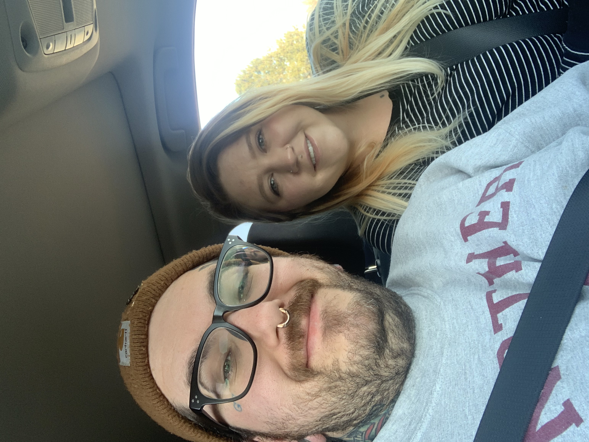

Born and raised in the Bluegrass state and transplated to Colorado in 2013. Brandenburg, KY is my hometown; it's a small town with around 3,000 residents sprawled out along the Ohio River. After living there for 24 years I decided to move to Denver on a whim with my then girlfriend to pursue a career in cannabis. We were married in 2016 and have a five year old son, two dogs, and a house in Lakewood, CO.
I enjoy spending quality time with my family, making music with my friends, reading sci-fi novels, and watching college sports, true crime documentaries, and horror movies. I started playing drums at the age of 11 and have played in punk/hardcore bands for a large part of my life.
I have been a jack of many trades throughout my life. I've done everything from factory production to barbering and I am now challenging myself by entering the world of web developement.